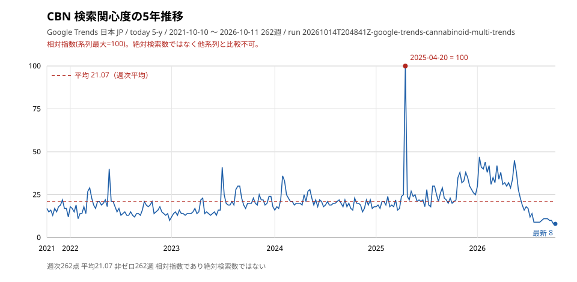
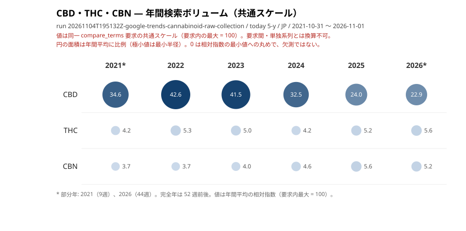
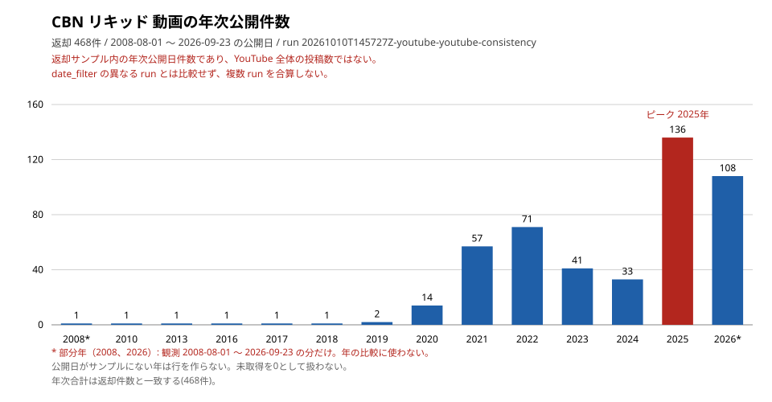

調査方法
このセクションでは、本ページの情報がどのように収集・分析されたかを公開しています。
研究質問
「日本におけるCBN成分へのオンライン関心は、どのように推移しているか？」
最終更新: 2026-11-05。
改訂: 2026-11-05 に研究質問の表現を統一し、引用の版表記をリリース 1.14.2 に合わせた。YouTube 節から動画単位の行（タイトル・チャンネル・URL）を削除し、あわせてチャンネル名を含む分布表（X・YouTube の上位5チャンネル）を削除した（集計のみ、ISS-20261015-COL-030 §4.1）。Google Trends 節は要求条件と観測範囲を分離し、表ごとの出所を明記し、共通スケール節を CBD・THC を同一要求に含むアンカー付き run の実測に合わせて更新した。2026-11-05 の C3 内容レビュー（C1〜C45）で数値・出所・区分を再確認し、公開状態の節を追加した（v1.14.5）。
改訂: 2026-11-06 に CBN リキッド 1 run（468 件 date_filter=all）の月次公開日件数（ピーク月・年次分布・再生数統計）を別集計の節として追加した。既存の YouTube 節は変更していない。引用の版表記を 1.14.6 に更新した。引用の版表記を 1.14.7 に更新した。
データソース
検索データ: Google Trends（日本、過去12ヶ月・5年）規制資料: 厚生労働省
独自データ: CBN の Google Trends 検索需要 一次データ
データソース: Google Trends / 地域: 日本 (JP) / 要求: today 12-m・today 5-y（週次、単独系列） / 収集方法: google-trends-mcp（現行 run は 0.1.1、2026-10-02 の legacy run は版の記録なし） / 取得日: 表ごとの出所を参照
Google Trends から、CBN の日本国内検索興味度（相対指数 0-100）を取得しました。
用語の定義:
単独平均（個別正規化値） : 各キーワードを個別に取得した際の平均値（12ヶ月と5年は別系列）。各キーワードのピークを100とする正規化であり、キーワード間の比較には使用できない 。比較平均（共通スケール値） : 複数キーワードを同時取得した際の12ヶ月平均値。比較セット内の最大値を100とする正規化であり、キーワード間の相対的な検索需要を示す 。興味度スコア : Google Trends が返す相対指数（0-100）。絶対検索数ではなく、期間内の最大検索量を100とした相対値。
5年データサマリー（個別正規化値）
指標
値
要求条件
JP / today 5-y
観測範囲（返却点の範囲）
2021-10-10 〜 2026-10-11（262週）
5年平均
21.07
ピーク
2025-04-20（値: 100）
最新値
8
出所: run 20261014T204841Z-google-trends-cannabinoid-multi-trends（JP / today 5-y / 2026-10-14T20:48:41.936443Z 収集）。記録にある項目: 初出 2021-10-10（値 17）、非ゼロ 262 週 / ゼロ 0 週、データあり期間 2021-10-10 〜 2026-10-11。
補足: この表の run は 20261014T204841Z-google-trends-cannabinoid-multi-trends（query_id cbn-general-ja）、要求窓は metadata/windows/2021-10-10_2026-10-12.json。5年平均は週次 262 点の算術平均（小数第 2 位）、非ゼロ週は値が 0 でない週である。

図1: CBN 検索関心度の5年推移 。値は単独系列の相対指数（この系列の最大 = 100、2025-04-20）で、絶対検索数ではない。破線は週次平均 21.07。観測範囲 2021-10-10 〜 2026-10-11（262 週）。出所: run 20261014T204841Z-google-trends-cannabinoid-multi-trends。
12ヶ月データサマリー（個別正規化値）
キーワード
12ヶ月平均
12ヶ月最高
CBN 55.6
100
出所: run 20261002T081839Z-google-trends-cbn-12m（JP / today 12-m / 2026-10-02 収集）。観測範囲 2025-09-28 〜 2026-09-27（53週）。表示値 55.6 は週次 53 点の算術平均（小数第 1 位）。
共通スケール比較
現行窓: 5年 2021-10-31_2026-11-08 を、CBD・THC と CBN を同一の compare_terms 要求に含む run で取得した。この化合物について現行窓の 12ヶ月アンカー付き run は未取得（単独系列の値で代用しない）。単独系列の値とは換算しない。窓の登録ファイルは metadata/windows/<窓 id>.json。
検索語
平均
非ゼロ点
区分
CBD（アンカー） 33.0916 262 週 派生 THC（アンカー） 5.0496 262 週 派生 CBN 4.5611 262 週 派生

図2: CBD・THC・CBN — 年間検索ボリューム（共通スケール） 。値は同一 compare_terms 要求（CBD・THC・CBN）の共通スケールによる年間平均で、要求内の最大 = 100。要求間・単独系列とは換算できない。年間平均は週次値の暦年平均（部分年: 2021（9 週）、2026（44 週））。出所: run 20261104T195132Z-google-trends-cannabinoid-raw-collection。
出所: run 20261104T195132Z-google-trends-cannabinoid-raw-collection（JP / today 5-y / 窓 2021-10-31_2026-11-08 / 観測 2021-10-31 〜 2026-11-01（262 週） / 2026-11-04T19:51:32.465083Z 収集）。平均は週次 262 点の算術平均（小数第 4 位）。
要求語（5年）: この run の要求語は CBD・THC・THCH・CBN・CRDH の 5 語で、正規化は同一要求内の最大値 = 100（CBD の 2025-08-31）。本表はこのうち CBD・THC・CBN を載せる。
旧窓の値は現行窓の値ではない: 2026-10-23 収集の setA〜D（窓 2021-10-17_2026-10-18）と 2026-10-02 の 12ヶ月比較 run は履歴として raw に残るが、本節は現行窓の run だけを示す。
制約: Google Trends は相対指数であり、絶対検索数ではない。0 は相対指数の最小値（閾値未満）であり、検索が存在しなかったことや欠測を意味しない。各系列は単発 run であり、反復実行による安定性は未測定。run 間・窓間の平均は比較しない。本ページは Google Trends・X・YouTube の値を合算しない。
独自データ: CBN の X (Twitter) 言及分析 一次データ
データソース: X (Twitter) via Apify / 言語: 日本語 (lang:ja) / 有効件数: 88件 / 取得日: 2026-10-08
収集結果サマリー
指標
値
元データ件数
89件
有効分類数
88件 （1件除外）
言語フィルタ
日本語 (lang:ja)
コンテンツ分類結果（信頼区間付き）
カテゴリ
件数
比率
95% CI
製品宣伝・販売
17
19.3%
[12.4%, 28.8%]
製品レビュー
3
3.4%
[1.2%, 9.5%]
会話・引用
21
23.9%
[16.2%, 33.7%]
その他
47
53.4%
[43.1%, 63.5%]
方法: キーワードベースのルール分類。信頼区間は Wilson スコア法による95%信頼区間。
出所: Apify による収集（2026-10-08、元データ 89 件）。分類は research/x/20261008-x-classification-batch1.json の CBN（n=88、除外 1 件）と一致する。raw は git_untracked でリポジトリに保持されていないため、分類の内訳は raw から再計算できない（分類記録から照合できる）。
制約: ルールベース分類のため、文脈による誤分類の可能性がある。X 検索結果のサンプルであり、全投稿を網羅するものではない。X の観測期間はリポジトリに保持した記録に無く、取得日のみを示す（期間の欠測であり、言及ゼロを意味しない）。
規制状況: CBN の日本法での法的扱い 一次資料の整理
データソース: 厚生労働省 / 調査日: 2026-10-08
法的扱い
項目
内容
法的扱い
指定薬物（2026年6月1日施行）
法令名
薬機法（指定薬物）
施行日
2026-06-01
出典
一次資料
注意: 法的状況は調査時点の結果。法改正の可能性あり。
独自データ: CBN 製品の COA 分析結果 一次データ
データソース: サプライヤー提供 COA / 取得日: 2026-10-08
COA（Certificate of Analysis）は、製品に含まれる成分を分析した証明書です。
分析証明書サマリー
項目
内容
分析ラボ
未記載
製品タイプ
Oil (Distillate)
主要成分
CBN
分析結果
CBN 製品の COA 分析結果
注意: CBN 製品の COA（サプライヤー提示）。
COA の限界: 原料 COA ≠ 販売製品ごとの検査結果。サプライヤー分析 ≠ 当店分析。
独自データ: CBN の YouTube トレンド 一次データ
データソース: YouTube Search via Apify / 検索クエリ: 「CBN カンナビノイド」 / 取得日: 2026-10-08
収集結果サマリー
指標
値
ユニーク動画数
24件
検索クエリ
CBN カンナビノイド
取得日
2026-10-08
再生数統計
統計量
再生数
平均
59,922
中央値
19,777
最大
788,651
最小
405
動画長統計
出所: Apify の検索収集（2026-10-08、クエリ「CBN カンナビノイド」、ユニーク 24 件）。raw は git_untracked でリポジトリに保持されておらず、本節の件数・統計はリポジトリから再計算できない（収集時の記録値）。
制約: YouTube 検索結果のサンプルであり、全動画を網羅するものではない。再生数は取得日時点の値であり、変動する可能性がある。動画単位の行（動画 ID・タイトル・チャンネル・URL・再生数）は公開しない（集計のみ、ISS-20261015-COL-030 §4.1）。
独自データ: CBN の YouTube 動画分析 一次データ
データソース: YouTube Search via Apify + YouTube Data API / クエリ: "CBN リキッド" / 件数: 22件 / 取得日: 2026-10-09
動画データサマリー
指標
値
ユニーク動画数
22
投稿日範囲・半開区間
2021-02-14 〜 2025-11-20・[2021-02-14, 2025-11-21)
取得日
2026-10-09
検索クエリ
CBN リキッド
再生数統計
統計量
値
平均再生数
39,580
中央値再生数
17,654
最大再生数
366,209
最小再生数
49
制約: YouTube 検索結果は取得日時点のものであり、動画の追加・削除により変動する可能性がある。投稿日は YouTube Data API から取得した絶対日付。なお、投稿日の取得に用いた YouTube Data API v3 は 2026-10-12 の方針判断により使用を取り止め、当時の raw は削除済みである（本節の数値は削除前の取得結果であり、再取得は行わない）。動画単位の行（動画 ID・タイトル・チャンネル・URL・再生数）は公開しない（集計のみ、ISS-20261015-COL-030 §4.1）。
独自データ: CBN リキッドの月次公開日件数（date_filter=all 別集計） 一次データ（観測 + 派生）
データソース: YouTube Search via Apify / 検索クエリ: 「CBN リキッド」（日本語・製品語による近似的な日本市場限定） / query_id: cbn-liquid-ja
1 run の返却サンプルを集計した（他の run と合算しない）。値は返却サンプル内の月次公開日件数であり、YouTube 全体のピークではない。
収集サマリー: date_filter=all（468 件）
指標
値
run
20261010T145727Z-youtube-youtube-consistency
query_id
cbn-liquid-ja（CBN リキッド）
date_filter（API 要求条件）
all（関連度ベースの全期間取得）
収集終了（UTC）
2026-10-10T14:57:29Z
返却件数
468 件 （実行状態 success）
観測公開日範囲（返却レコードの公開日）
2008-08-01 〜 2026-09-23（UTC）
ピーク月（返却サンプル内）
2026-03（24 件）
再生数 最大 / 中央値 / 平均 / 最小
1,288,665 / 1,424 / 22,076.65 / 13（取得時点の値）
年次分布
年
件数
2008 1 2010 1 2013 1 2016 1 2017 1 2018 1 2019 2 2020 14 2021 57 2022 71 2023 41 2024 33 2025 136 2026 108

図3: CBN リキッド 動画の年次公開件数 。部分年（2008、2026）は * で示し、その年の観測日数分の件数である。返却サンプル内の公開日件数であり、YouTube 全体の投稿数ではない。観測公開日 2008-08-01 〜 2026-09-23、返却 468 件（年次合計と一致）。公開日がサンプルにない年は棒を作らない。出所: run 20261010T145727Z-youtube-youtube-consistency。
制約: 月次・年次件数は返却サンプル内の公開日件数であり、YouTube 全体の投稿数を表さない（全動画を網羅するものではない）。結果上限は宣言に記録が無いため、件数は返却サンプル件数としてのみ扱い、総数の推定には使わない。再生数は取得日時点の値であり、変動する可能性がある。未取得を 0 観測として扱わない。1 run のみで、反復実行による安定性は未測定のため、他の run・他の化合物・他ソースの値と合算も比較もしない。動画単位の行（動画 ID・タイトル・チャンネル・URL・再生数）は公開しない（集計のみ、ISS-20261015-COL-030 §4.1）。
出所: run 20261010T145727Z-youtube-youtube-consistency（date_filter=all / 2026-10-10T14:47:52Z 開始・2026-10-10T14:57:29Z 終了、468 件）。採用宣言は metadata/provenance/declarations/20261015-youtube-csv-adoption.json（execution.returned_count 468、window 2008-08-01T00:00:00Z 〜 2026-09-24T00:00:00Z の半開区間）、再保持の検証記録は metadata/provenance/declarations/20261106-youtube-liquid-batch-reretention-youtube-consistency.json（hash・件数は宣言と一致）。payload SHA-256 は f644cb03…1599e。raw payload は Git 非追跡・非公開で、リポジトリに保持していない。
照合: 年次合計は返却件数と一致する（468）。ピーク月は返却サンプル内の最多月である（2026-03 が 24 件）。
公開状態
公開状態: 図を埋め込んだため再承認待ち。 本文の内容は envelope metadata/publication/research-cbn/decision.json の承認（status approved）の対象だが、artifact_sha256 は図を埋め込む前の HTML の値であり、現行 HTML とは一致しない。図を含む版の公開には、再承認と decision.json の hash 再固定、本節の監査記録の更新が必要である。
2026-11-06 に validation.cli audit-publication と gate-publication を現行 hash で実行した。公開契約の機械検査は本ページについて finding 0、公開適格ゲートは SUPPORTED（PUB-01〜PUB-11 がすべて PASS、WARNING なし）。PUB-11（C3 内容レビュー）は 2026-11-06 に C1〜C45 の 45 項目を本ページ・raw/comparison 成果物・methodology・taxonomy・evidence に照合して記録した（evidence.json の content_review、チェックリスト metadata/publication/content-review-checklist.json v1.0.0）。根拠は envelope の decision.json / evidence.json にある。
本節の版を v1.14.5 としてリリースする。
引用 (How to Cite)
KATO, Kyoji（2026）.10.5281/zenodo.23390594